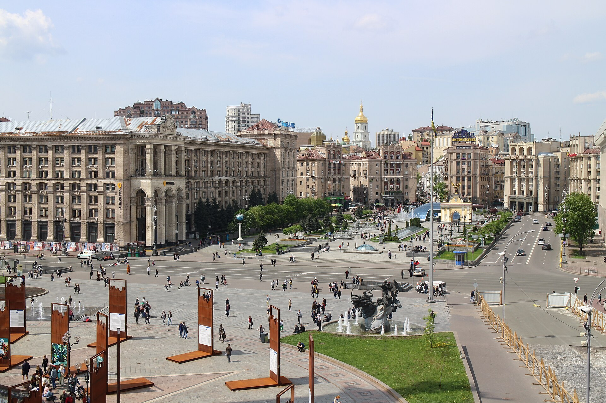

Zelensky: the US wants a trilateral US–Ukraine–Russia meeting by the end of October
After meeting German Chancellor Friedrich Merz in Kyiv, Zelensky said the US side is proposing a technical-level trilateral meeting by the end of October. Merz announced about €1 billion in military aid.

On October 4, at a press conference with German Chancellor Friedrich Merz in Kyiv, Ukrainian President Volodymyr Zelensky said the US side is in contact with Ukraine and Russia and is proposing a technical-level trilateral meeting by the end of October.
The talks proposal
According to Zelensky, Ukraine is open to taking part and has responded positively; the meeting could take place in the United Arab Emirates or another country proposed by the US. Russia's response to the proposal is not yet known. On the same day, Russia's Defense Ministry said, conversely, that it would intensify its strikes.
Germany's aid
During an unannounced visit to Kyiv, Chancellor Friedrich Merz announced about €1 billion (≈$1.13B) in military aid — long-range strike weapons, combat drones and satellite technology — plus €350 million in energy support for the winter (generators, substations, repairs). The visit took place amid active Russian drone strikes.
Why it matters for Uzbekistan
The war's outcome has direct significance for Uzbek labor migrants in Russia and their families. In the first half of 2026, remittances to Uzbekistan reached about $9.3 billion, roughly 72% of it from Russia (down from 77.6% a year earlier). Meanwhile, the number of Uzbeks who went to Russia for work in January–June 2026 fell 13.2%, and nearly 100,000 returned from Russia.